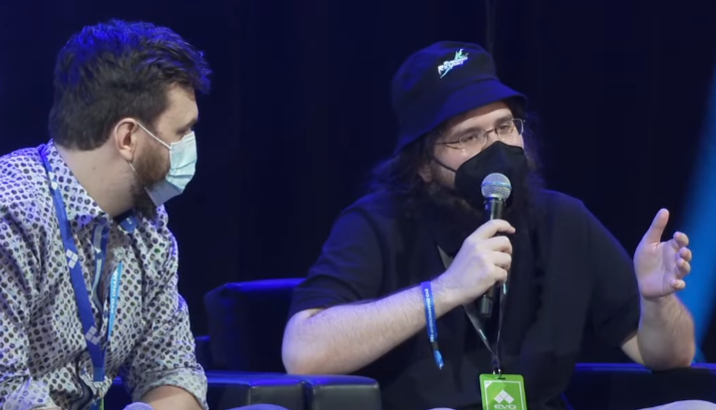

[TODO title]
aaaaaaaaaaa

2020
Work Anecdote
Collaboration Highlight
Going into Rushdown, I was a bit concerned that my collaborative abilities may have atrophied after several years of solo development. In order to mitigate that possibility, I made a point to keep an especially keen eye out for opportunities to assist and coordinate with teammates during the onboarding period.
One particular incident that stands out to me occurred after one of our weekly team-wide standups, roughly two weeks into my time on the team. I overheard one of our animators, Luke, voicing some complaints to a coworker. He had requested some tooling to allow him to animate certain in-engine physics values, and implementation was apparently taking considerably longer than expected.
With the importance of collaboration in mind, I reached out to Luke, clarified the specifics of his problem, and let him know I’d look into getting his ask sorted out from the engineering side. The task turned out to be relatively simple – it had simply gotten lost in the cracks organizationally – and a short while later I delivered Luke the tooling he had requested.
While this experience may seem somewhat mundane on the surface, this was my first interaction with Luke, and ultimately turned out to be the starting point for a strong friendship that would develop between us – a friendship which would enable us to collaborate as a highly functional unit in character and moveset development in a way that wasn’t represented in many other cross-discipline relationships on the team.